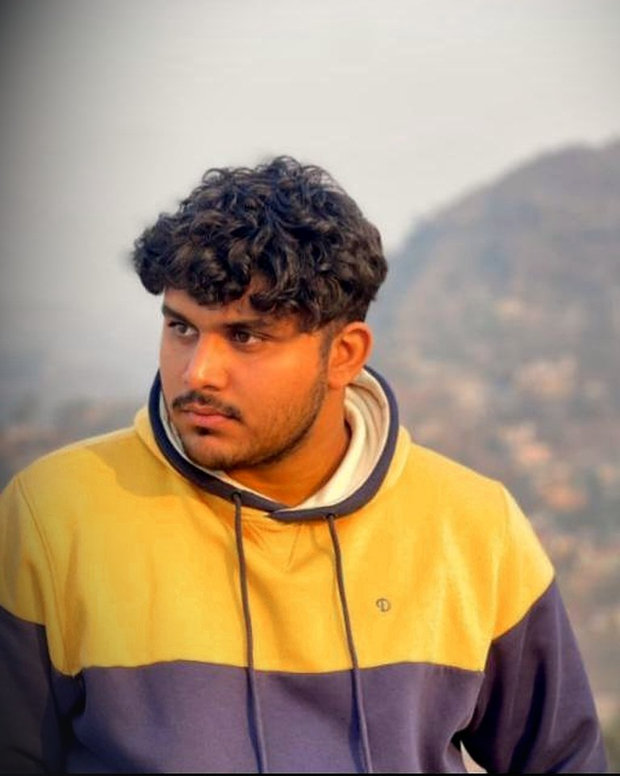

About
About
Background

I’m an AI engineer based in Karachi, Pakistan. My work sits where language models meet conventional software: agents that act through typed tools, retrieval that uses structure as well as similarity, and multimodal pipelines that turn model judgement into precise, editable output.
I came to this through research — a quantum computing internship and a final-year project in medical-image anomaly detection — then spent a year and a half at Codet AI on knowledge graphs, retrieval and coding agents. I now work as an AI Engineer at CareCloud on healthcare voice-agent automation, and I build Clyflo independently.
Interests
Agent architecture and reliability, knowledge representation and reasoning, information retrieval, multimodal understanding, and evaluation.
Education
B.S. Computer Science, FAST National University of Computer and Emerging Sciences, Karachi, 2021–2025.